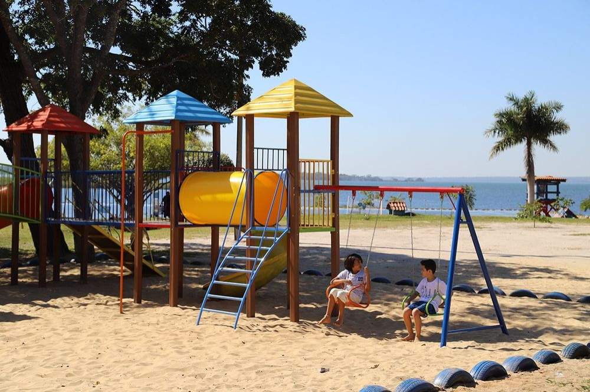

O Balneário Municipal Miguel Jorge Tabox é um dos principais espaços de lazer de Três Lagoas, muito procurado por moradores e turistas, especialmente nos dias quentes. Localizado às margens do Rio Paraná, o balneário oferece uma experiência de “praia de água doce”, sendo um dos lugares mais agradáveis para descanso e diversão na região. O local conta com boa infraestrutura, incluindo quiosques, áreas para churrasco, quadras esportivas, espaço para camping e uma faixa de areia onde os visitantes podem relaxar e aproveitar o contato com a natureza. É bastante comum ver famílias reunidas, grupos de amigos e visitantes aproveitando o dia com atividades ao ar livre. Além disso, o balneário é conhecido pela tranquilidade e pela beleza natural, com águas calmas que favorecem o banho em áreas permitidas. A presença de árvores proporciona sombra e torna o ambiente ainda mais confortável, principalmente durante o período da manhã. O melhor horário para visitar é nas primeiras horas do dia, quando o clima está mais fresco e o movimento ainda é menor, permitindo aproveitar o espaço com mais tranquilidade. Nos finais de semana e feriados, o local costuma ficar mais cheio, reforçando seu papel como um dos principais pontos de lazer da cidade.
